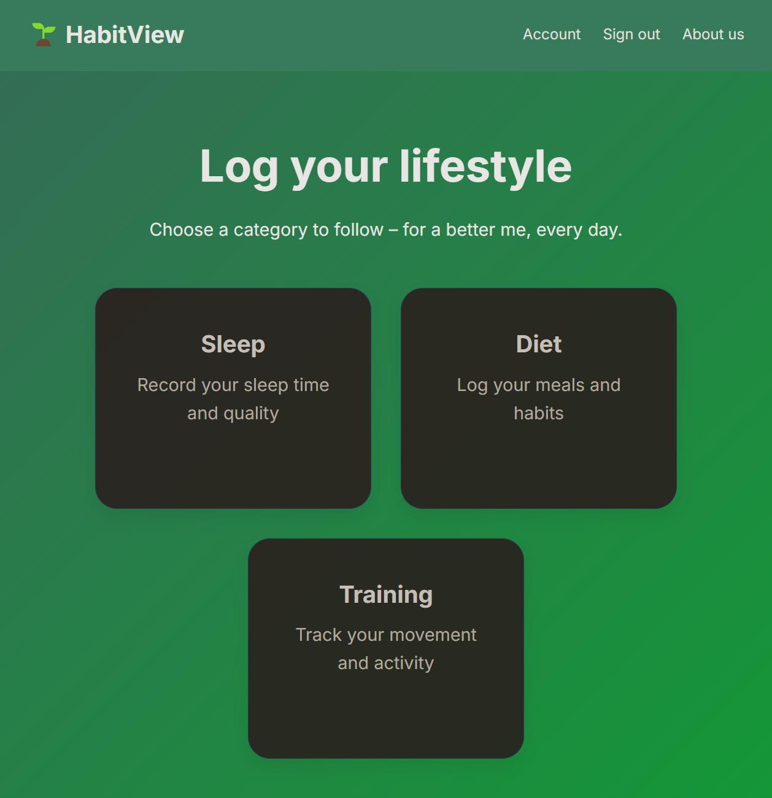

Amyna
Ongoing Internship ProjectAmyna is a national defense innovation platform developed for Ideon Science Park, designed to strengthen collaboration between startups, research institutions, industry partners and defense organizations.
I translated business requirements and stakeholder feedback into functional requirements, technical solutions and digital services, while working with system design, Strapi and Next.js development, API integrations, data workflows, testing, deployment planning and secure platform operations.
Role: Systems Development Intern / Full-Stack Developer